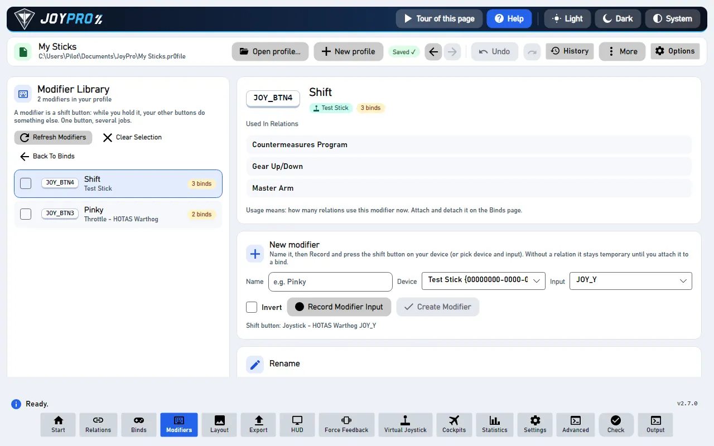

#Modifiers vernieuwen
KnopbeschrevenLeest de modifiers van het profiel opnieuw in en bouwt de kaarten opnieuw op met hoe vaak ze gebruikt worden.
Wijzigt niets.
Een modifier is een shift-knop: zolang je hem ingedrukt houdt, doen je andere knoppen iets anders. Eén knop, meerdere taken. De pagina Modifiers toont de shift-knoppen van je profiel, laat zien waar elk ervan wordt gebruikt, en maakt, hernoemt en verwijdert ze. Je zet een modifier op een toewijzing op de pagina Toewijzingen; de export schrijft hem in elke game die modifiers kent.


De meeste sticks hebben minder knoppen dan een modern toestel functies heeft. Een modifier verdubbelt ze: kies één knop als shift-knop (vaak de pinkhendel), en elke andere knop krijgt een tweede taak zolang je hem ingedrukt houdt.
Na de volgende export moet je voor de toewijzing de shift-knop ingedrukt houden: in DCS staat de modifier in de modifierlijst van het toestel en in de besturingscel als "Pinky + JOY_BTN1". Games zonder modifiers (zie de gamepagina's) krijgen de toewijzing zonder modifier, en de controle noemt zulke toewijzingen.
drafts.json) tot je hem op de pagina Toewijzingen koppelt; hij komt terug als je het profiel opnieuw opent.Een modifier maken
flowchart TD N["Nieuwe modifier:<br/>naam + Opnemen"] --> C["Modifier maken"] C --> A["Op de toewijzing<br/>die je koos"] C -.-> T["Tijdelijke modifier:<br/>koppel hem op de pagina Toewijzingen"] T -.-> A
Bij export
flowchart TD P["Een toewijzing met de<br/>modifier 'Pinky'"] --> E["Exporteren"] E --> D["DCS: de modifierlijst<br/>van het toestel,<br/>'Pinky + JOY_BTN1'"] E --> O["Andere games: hun eigen<br/>combinatievorm, of geen"]


Viewmodel: MainWindowViewModel.cs (RefreshModifiersAsync, CreateModifierOnSelectedBindAsync, RenameModifierAsync, DeleteSelectedModifiersEverywhereAsync, RecordModifierInputAsync), de tijdelijke modifiers in pendingModifiersByName, bewaard door het automatisch opslaan (profile-history). Een modifier wordt als reformer-string (naam, apparaat, input, omgekeerd) op een toewijzing geschreven.
Engine: engine binds modifier list vult de bibliotheek, engine binds modifier add zet een modifier op de toewijzing van een relatie, engine binds modifier rename en engine binds modifier remove wijzigen en verwijderen hem; daarna leest de pagina engine binds list opnieuw. Opnemen gebruikt dezelfde vastleggingsdienst als de pagina Toewijzingen (DirectInput en het toetsenbord, de time-out en opwarmtijd voor opnemen uit Instellingen > Toewijzingen).
Per game: DCS schrijft de modifiers in <aircraft>\modifiers.lua en in de reformers van elke toewijzing; IL-2 en de registergames gebruiken hun eigen combinatiesyntaxis waar ze die hebben, en het opnieuw importeren brengt de namen terug (Importeren).
De functiedocumentatie achter deze pagina, gemaakt uit de repository:
9 bedieningselementen, gelezen uit de broncode van het programma: 9 beschreven, 0 met de feiten uit de broncode (tooltip, codecommentaar, engine-aanroep), 0 nog uit te breiden.
Leest de modifiers van het profiel opnieuw in en bouwt de kaarten opnieuw op met hoe vaak ze gebruikt worden.
Wijzigt niets.
Vinkt elke modifierkaart uit. Alleen de vinkjes veranderen.
Terug naar de pagina Toewijzingen, waar je modifiers koppelt aan en loskoppelt van de toewijzing van een relatie.
Vinkt de modifier aan voor Selectie verwijderen en voor koppelen op de pagina Toewijzingen.
Tooltip Actief zolang de knop NIET ingedrukt is
De nieuwe modifier is actief zolang zijn knop niet ingedrukt is.
Handig voor een schakelaar met twee standen: de ene stand is de normale laag, de andere de verschoven laag.
Wacht op de volgende druk en vult Apparaat en Input daarmee in.
Druk erop, en druk dan op de shift-knop.
Maakt de modifier uit naam, apparaat, input en Omkeren.
Als er een relatie is gekozen, gaat hij meteen op die toewijzing; anders is het een tijdelijke modifier die bij het profiel wordt bewaard totdat je hem koppelt.
Geeft de modifier in Van de naam in Naar, in elke toewijzing die hem gebruikt.
In de game: de nieuwe naam is na de volgende export te zien.
Haalt elke aangevinkte modifier van elke toewijzing van het profiel af; de toewijzingen blijven, zonder de shift.
Vraagt het eerst; Ctrl+Z brengt ze terug.